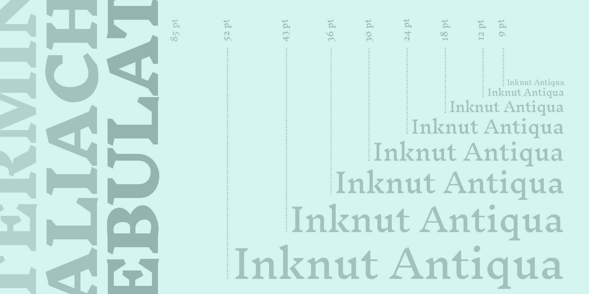
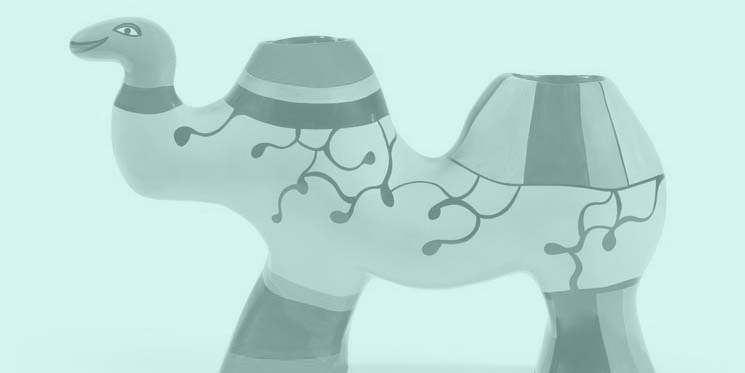

Juliette
Dupré
à propos

site éco-conçu

portfolio


Juliette Dupré, étudiante en 2e année à l'ésad Amiens.
Vous pouvez me contacter par mail à l'adresse juliettedupre04@gmail.com

22 tirages
148 x 210 mm
papier aquarelle 250 g
Le projet repose sur l'expérimentation du cyanotype comme méthode d'impression photographique. C'est un procédé ancien qui utilise une solution de ferricyanure de potassium et de citrate d'ammonium ferrique. Le support imbibé réagit comme un négatif. Les parties non-exposées aux UV resteront blanches après passage dans un bain de rinçage.


5 affiches
420 x 594 mm
Création de 5 affiches de thématiques différentes. Chacune illustre l'association de 3 mots choisis aléatoirement dans un livre.
Ce site a été conçu de manière à minimiser son impact sur l'environnement.
L’éco-conception web vise à réduire l’impact environnemental d’un site internet lors de son cycle de vie, de sa fabrication à son utilisation.
La palette de couleurs est réduite à 3 nuances.
Le site utilise exclusivement des font présentes sur tous les ordinateurs.
L'hébergeur est o2switch. Ses datacenters sont localisés en France.
Il n'y a pas de Java Script (très gourmand en énergie).
Les images sont compressées pour réduire leur poids. Elles se chargent au fur et à mesure que la page est déroulée.
Le site contient une seule et unique page.